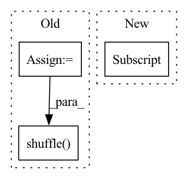

Pattern ID :28922

Before Change
edges = self.edge_index[:, 0:self.num_edges].T.tolist()
edges_label = self.edge_label.tolist()
edges_and_label = list(zip(edges, edges_label))
random.shuffle(edges_and_label)
edges, edges_label = zip(*edges_and_label)
split_offset = 0
// perform `secure split` s.t. guarantees all splitted subgraph
After Change
edges_split_i = shuffled_edge_indices[split_offset:]
// shallow copy all attributes
graph_new = copy.copy(self)
graph_new.edge_label_index = self.edge_index[:, edges_split_i]
graph_new.edge_label = torch.index_select(self.edge_label,
0, edges_split_i)
graph_new.edge_split_index = edges_split_i
split_graphs.append(graph_new)
In pattern: SUPERPATTERN
Frequency: 3
Non-data size: 3
Instances
Fragment ID: 85089472
Project Name: snap-stanford/deepsnap
Commit Name: 30916909252bba09897b0e688bba6cf63f113671
Time: 2020-11-24
Author: youjiaxuan@gmail.com
File Name: deepsnap/graph.py
M Class Name: Graph
N Class Name: Graph
M Method Name: _split_edge(2)
N Method Name: _split_edge(2)
M Parent Class: object
N Parent Class: object
M File Name: deepsnap/graph.py
N File Name: deepsnap/graph.py
M Start Line: 981
M End Line: 1010
N Start Line: 981
N End Line: 1001
'>
Before Change
else:
lam = 1
batch_size = x.shape[0]
index = np.arange(batch_size)
np.random.shuffle(index)
mixed_x = lam * x + (1 - lam) * x[index, :]
if training_context["current_batch"]==0:
After Change
y = train_data.value_list[1].clone()//label
elif get_backend() == "tensorflow":
x = copy.deepcopy(train_data.value_list[0]) // input
y = copy.deepcopy(train_data.value_list[1]) // label
model=training_context["current_model"]
if self.alpha > 0:
'>
Fragment ID: 85089462
Project Name: allanyiin/trident
Commit Name: 2e38b10659e16eb41f74326254c44564d161500e
Time: 2020-05-17
Author: allan@asiaminer.com.tw
File Name: trident/callbacks/regularization_callbacks.py
M Class Name: MixupCallback
N Class Name: MixupCallback
M Method Name: on_loss_calculation_end(2)
N Method Name: on_loss_calculation_end(2)
M Parent Class: RegularizationCallbacksBase
N Parent Class: RegularizationCallbacksBase
M File Name: trident/callbacks/regularization_callbacks.py
N File Name: trident/callbacks/regularization_callbacks.py
M Start Line: 46
M End Line: 70
N Start Line: 54
N End Line: 90
'>
Before Change
for d in tqdm(self.datasets, desc="Loading LMDB datasets...")
])
idxs = np.arange(len(base_tr_dataset))
split_point = int(len(base_tr_dataset) * (1 - self.val_split))
np.random.shuffle(idxs)
tr_subset = Subset(base_tr_dataset, idxs[:split_point])
val_subset = Subset(base_tr_dataset, idxs[split_point:])
After Change
val_dataset = torch.utils.data.ConcatDataset([
TensorpackLmdbImageDataset(
str(self._dataroot / d["tr_lmdb"]), **d, augmentation_fn=transform_val
) for d in tqdm(self.datasets, desc="Loading LMDB datasets...")
])
'>
Fragment ID: 85089461
Project Name: microsoft/archai
Commit Name: d1dd0a59dc86ff271b12e111596b7cbefa2675d3
Time: 2022-12-16
Author: pierokauffmann@gmail.com
File Name: archai/datasets/providers/multi_lmdb_image_provider.py
M Class Name: MultiTensorpackLmdbImageProvider
N Class Name: MultiTensorpackLmdbImageProvider
M Method Name: get_train_val_datasets(3)
N Method Name: get_train_val_datasets(3)
M Parent Class: DatasetProvider
N Parent Class: DatasetProvider
M File Name: archai/datasets/providers/multi_lmdb_image_provider.py
N File Name: archai/datasets/providers/multi_lmdb_image_provider.py
M Start Line: 89
M End Line: 102
N Start Line: 89
N End Line: 113